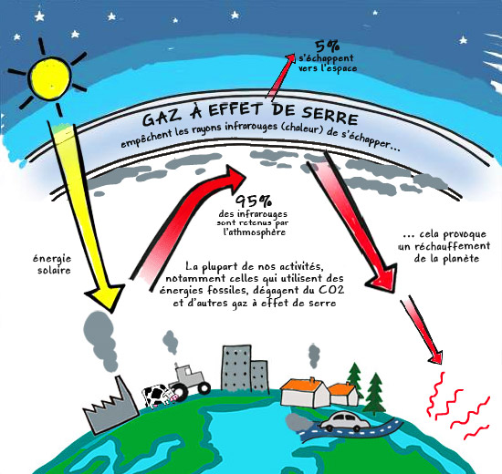
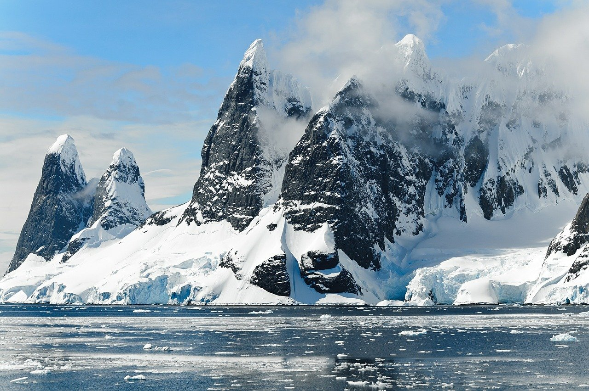
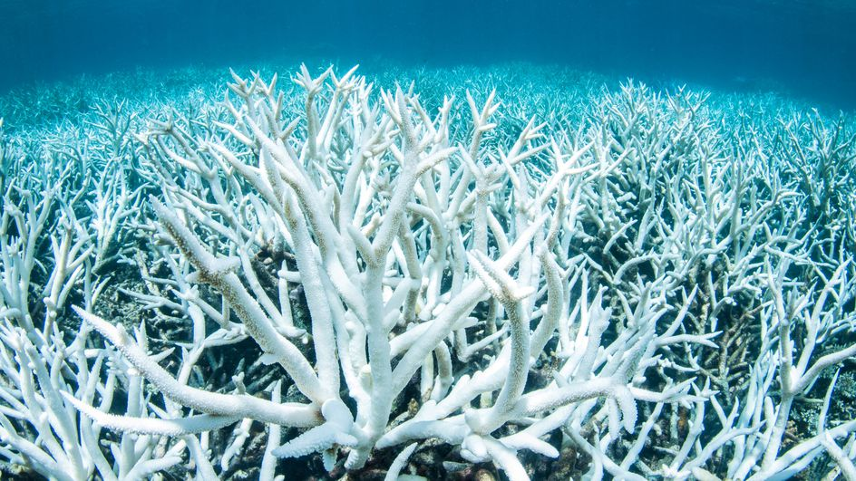
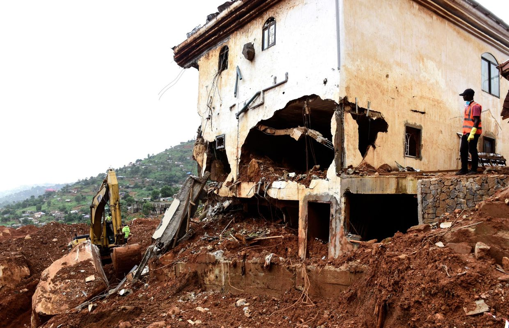
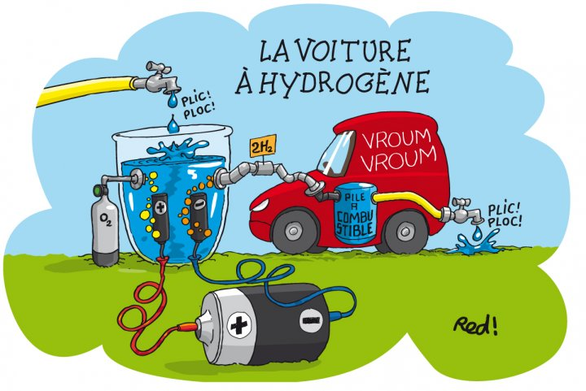

Le réchauffement climatique, ses causes, ses conséquences, ses solutions
Suzanne Le Bars, Justin Trableau, Samih Bezaa
Publié le 27 mai 2021

Auriez-vous constaté dernièrement des changements brusques de température ? Des annonces fréquentes de sinistres ou de catastrophes naturelles lorsque vous écoutiez les informations ? Est-ce que l’époque actuelle et le virage climatique qu’elle semble emprunter vous inquiète ?
Parce qu’ils constituent pour nous le centre de nos préoccupations. A travers le monde, chaque humain et chaque élément constituant notre environnement possède un point commun, un unique lien qui nous rassemble et que nous partageons du début jusqu’à la fin, la Terre. Nous vivons grâce à elle, et nous sommes persuadés d’évoluer en parallèle, mais êtes-vous seulement conscient des répercutions de notre vie sur la sienne ? L’eau, l’oxygène, la nourriture, les trois piliers de notre existence nous sont fournis par elle, grâce à elle. Pourtant, nous semblons emprunter le pire chemin pour la maintenir en état, l’entretenir et la préserver. Combien d’entre vous a-t-il déjà rêvé de se retrouver au bord de la mer, profitant du calme et de l’air marin pour finalement ne trouver qu’une étendue de déchets immondes ou de pollution en tout genre ? Combien d’entre vous s’est-il déjà promené dans les rues de sa ville en prenant soin d’esquiver les canettes, les mégots, les sacs plastiques se trouvant sur son chemin ? Combien d’entre vous a-t-il délibérément jeter ses déchets personnels sans aucun tri en se cachant derrière la pensée qu’à lui seul il ne changerait rien ?
Nous avons créé cette association dans le but de contrer cet égoïsme que chaque être humain cultive. Nous souhaitons de tout cœur convaincre la personne qui fera la différence. Parce que l’écologie devrait être la principale source d’inquiétude de chacun d’entre nous. Parce qu’il n’existe rien de plus précieux que l’environnement dans lequel nous vivons, et qui cultive la vie dans sa globalité. Et pourtant le sujet que nous défendons n’est pas récent, n’est pas nouveau, il est rabâché à votre oreille constamment, et vous faites le choix de l’ignorer parce que la vérité est effrayante. Nous sommes effrayés, de constater que les échéances tant redoutées ne se compte même plus en centaines mais parfois en dizaines d’années. Et plus nous cherchons, plus nous comprenons que toutes ses catastrophes dont nous sommes témoins tous les jours prennent racine chez l’être humain, ce qui dans un sens nous certifie qu’il est encore temps de changer les choses. Nous avons centré nos recherches sur ces fameux envols de température, sujet qui depuis quelques années est de plus en plus constatable au fil des saisons. Cependant ces recherches ont engendré plusieurs questionnements, et parmi eux, qu’est-ce que le réchauffement climatique ? Quelles en sont les causes ? Quelles conséquences pour nous et pour la Terre ? Mais surtout comme lutter efficacement et de manière durable contre ce phénomène ?
Nous souhaitons donc, en tant qu’association, sensibiliser autant que possible et surtout engager les autres dans la cause. Ce dossier en est l’exemple, mais nous ne souhaitons pas demeurer passifs pour autant. Nous souhaitons entre autres diminuer la surproduction industrielle, notamment dans le milieu du textile mais également de l’agriculture qui sont dans facteurs extrêmement polluants pour l’écosystème, en créant des espaces de culture à proximité des villes et lieux de vie. En poussant chacun à produire par lui-même, il est possible de diminuer la pollution industrielle mais également les pertes et résoudre des problèmes d’ordre économique.
Dans ce dossier nous aborderons dans un premier temps les causes majeures du réchauffement climatique, puis les conséquences sur notre vie actuelle et à venir pour enfin aborder les solutions employées pour pallier ce phénomène.
QUELLES SONT LES CAUSES DU RÉCHAUFFEMENT CLIMATIQUE ?
Le réchauffement climatique est au centre des préoccupations de ces dernières années, nous essayons de le freiner, le limiter voire le stopper, sans même en connaître l'intégralité des causes.
Depuis la Révolution Industrielle, l’Homme a connu de grandes innovations en matière de technologie et de mécanique. L’ère des usines et de la production à grande échelle atteint rapidement l’ensemble de la planète jusqu’à devenir une nécessité à l’équilibre du monde. Nous ne saurions plus, aujourd’hui, comment vivre sans nos ressources. Cependant, l’exploitation de nos ressources entraînent des conséquences dramatiques sur notre futur, et nous sommes aujourd’hui en train de vivre la dégradation de la santé de notre planète. Il serait important et même nécessaire de s’interroger sur notre avenir, de réagir ensemble avant d’atteindre le point de non-retour.
Notre questionnement portera donc sur les changements climatiques, quelles en sont les causes, comment impacteront-ils notre vie future, leurs conséquences ainsi que les luttes envisagées pour les freiner voire les stopper durablement.
Nous aborderons aujourd’hui le premier point de notre plan, à savoir qu’est-ce que le réchauffement climatique et par quoi est-il causé en nous appuyant sur une vidéo du Monde, un article de futura planète, une recherche menée par un groupe de scientifiques, un article deyoumatter.world et enfin un article de youknowproject.com.
Pour comprendre les changements climatiques auxquels nous faisons face actuellement, il est important de définir ce qu’est l’effet de serre et par quoi il est provoqué.
1. L’effet de serre
Tout d’abord, l’effet de serre est présent naturellement dans l’atmosphère et agit comme un régulateur de température. Grâce à lui, la vie a pu se développer sur la surface de la Terre puisqu’en temps normal la température sur la surface du globe ne devrait pas dépasser -18 C°. D’après un article de futura planète on comprend que l’effet de serre laisse passer une partie des rayons solaires qui viennent frapper la terre, créant ainsi un rayonnement infrarouge partiellement piégé dans l’atmosphère grâce à la présence de gaz tels que le CO2 ou dioxyde de carbone, le N2O ou protoxyde d’azote et le CH4 ou méthane. Bien que l’effet de serre soit également présent sur les planètes Vénus et Mars, sur Terre et à cause de l’activité Humaine il joue un rôle élémentaire dans le réchauffement climatique que nous vivons aujourd’hui et sur toutes les conséquences négatives qu’il engendre. En effet, d’après une vidéo diffusée sur le site internet du Monde, 97% des scientifiques travaillant sur le sujet estiment que le réchauffement climatique est dû à l’influence de l’activité humaine sur l’effet de serre. L’augmentation très importante de la production industrielle qu’a entraîné la Révolution industrielle a laissé des impacts énormes sur le climat.
2. La combustion de gaz et pétrole

Parmi les impacts de l’Homme les plus marquants, on retrouve la combustion de pétrole et de gaz. En effet, la concentration de CO2 dans l’air est passé de 270 ppm (parties par million) à la fin du XIXème siècle à presque 400 ppm aujourd’hui, il s’agirait de la plus grosse concentration depuis plus de 800 000 ans. Les scientifiques Suzanna Malkoun, Jawad Korkomaz et Henri Georges affirment dans leur étude sur les énergies fossiles que bien qu’elles représentent actuellement plus de trois quarts de la consommation mondiale d’énergie, elles sont d’une part épuisable et surtout leur utilisation aggrave grandement l’état de la planète. « L’extraction, la transformation, le transport et la combustion du pétrole, du charbon et du gaz entrainent tous l’émission de très grandes quantités de CO2 et autres gaz à effet de serre (exemple : le méthane) dans l’atmosphère. » Cette émission entraîne des conséquences sans précédents parmi lesquelles des catastrophes climatiques, la montée des eaux, de la pollution acide…
3. La déforestation
De plus, la déforestation a également un impact très important que l’on commence à ressentir aujourd’hui. Des surfaces importantes voire des forêts entières sont définitivement perdues au profit de l’agriculture qui représente 80 % des pertes d’après le rapport de la FAO paru en 2016, de l’urbanisation ou même de l’activité minière donc tous trois directement liés à l’activité humaine. Cette déforestation cause de graves conséquences sur la subsistance de la biodiversité, les animaux perdent leur habitat naturel, l’équilibre est rompu. En outre, l’impact sur le réchauffement climatique est également catastrophique. On apprend à l’école que les arbres sont très importants pour l’oxygène que nous respirons, allant jusqu’à surnommer l’Amazonie « les poumons du monde » en fermant les yeux sur une réalité pourtant présente, sans arbres nous perdons une capacité de stockage colossale pour le CO2 et augmentons l’effet de serre. En effet, le site youmatter.world avance que « la déforestation est responsable à l’échelle mondiale de l’équivalent de 11.3% des émissions de CO2 d’origine anthropique, ce qui en fait l’un des plus gros facteur de réchauffement climatique. »
4. L’agriculture intensive
Enfin, l’agriculture intensive qui répond pourtant à un besoin élémentaire à savoir l’alimentation est destructive pour l’environnement. Ainsi, l’augmentation de la population entraînant une augmentation de la demande pousse l’agriculture à la surproduction et surtout à l’emploi toujours plus important de moyens industrielles et technologiques pour répondre à ces besoins plus rapidement et plus efficacement. Seulement, accordé au site nowyouknowproject.com, l’emploi toujours plus intensif d’intrants tels que les engrais ou les produits phytosanitaires pollue les eaux et les sols, et cause ainsi indirectement de la déforestation. Le problème réside dans la nécessité d’espaces, que nous créons à partir de la nature déjà présente, mais également dans la négligence de l’environnement qui fonctionne de manière équilibrée, et que nous détruisons en brisant cet équilibre.
Cette illustration décrit le fonctionnement des gaz à effet de serre comme abordé dans le premier point de mon développement. On constate ainsi que la concentration en hausse de ces gaz causées principalement par nos activités, à savoir l’utilisation des énergies fossiles ou la surproduction industrielle, renforce la « barrière » des gaz à effet de serre présente dans l’atmosphère et retient davantage les rayonnements infrarouges ce qui cause une hausse de la température globale à une vitesse plutôt fulgurante et sans arrêt en augmentation.
Bien que le gaz à effet de serre soit tenu comme responsable du réchauffement climatique actuel, il n’est en réalité que l’une des causes dont découlent certaines conséquences bien plus visibles et réelles actuellement.
QUELLES SONT LES CONSÉQUENCES DU RÉCHAUFFEMENT CLIMATIQUE ?
Nous voyons aux informations chaque jour, des incendies, des inondations et autres catastrophes naturelles en étant persuadés que ces phénomènes se produiront toujours sans que l’humain n’en soit responsable. Le fait est qu’aujourd’hui, notre comportement est à la source de lourdes conséquences climatiques.
1. La fonte des glaciers :
Depuis l’ère préindustrielle, la Terre s’est déjà réchauffée d’environ 1 degré. Le scénario optimiste est un réchauffement de 2 degrés par rapport à cette même ère, mais pourrait tout autant atteindre, voire dépasser les 5 degrés d’ici 2100. Cette augmentation de 5 degrés correspond à la projection de la trajectoire actuelle des rejets de gaz à effet de serre par les activités humaines. Jamais nos ancêtres n’ont connu d’évolution aussi fulgurante.
Selon Olivier Talagrand, directeur de recherche émérite CNRS au Laboratoire de Météorologie Dynamique : “Un réchauffement peut certainement avoir des effets bénéfiques. Le réchauffement actuel produira probablement des conditions plus favorables à l’agriculture dans une grande partie de la Sibérie et du Grand Nord canadien. De même, la disparition estivale de la banquise arctique raccourcira substantiellement le temps de navigation entre l’Atlantique Nord (Est des Etats-Unis et Europe) et le Pacifique Nord (Japon et Chine). Cependant, dans les régions arctiques, un des effets principaux du réchauffement climatique est pour le moment la fonte du pergélisol. Cette fonte détruit de nombreuses constructions édifiées sur le sol gelé, et émet du méthane (CH4), qui renforce l‘effet de serre. La cause principale d’inquiétude est la rapidité du réchauffement actuel, et des modifications qu’il va causer. On peut s’attendre par exemple à une élévation substantielle du niveau de la mer (50 cm ou plus au cours du XXIème siècle), qui va menacer de très vastes régions comme le Bangladesh. Les rendements agricoles ont énormément augmenté durant les cinquante dernières années. En Inde, cela a permis la disparition des famines qui frappaient régulièrement le pays. Mais les progrès de l’agriculture ont été fondés sur l’hypothèse implicite que le climat ne varierait pas, et pourraient être remis en cause par une modification rapide de ce dernier. Ce n’est pas tant le réchauffement en lui-même qui est redoutable. Un refroidissement éventuel le serait peut-être encore plus. C’est avant tout la rapidité des changements induits par le réchauffement qui est cause d’inquiétude.”
Selon la synthèse du 5e rapport du Groupe d'experts Intergouvernemental sur l'évolution du Climat (GIEC), le changement climatique est très susceptible d'entraîner les effets suivants : Une élévation du niveau de la mer plus élevée qu’attendu dans l'analyse précédente. Une augmentation de la température moyenne de plus de 2 ° C d'ici 2100, si l'on ne suit pas la trajectoire du scénario le plus ambitieux.
Mais dans une étude publiée dans la revue de l'Académie nationale des sciences (PNAS) en mai 2019, les chercheurs estiment que l'élévation du niveau de la mer pourrait même être supérieure à la prédiction du GIEC. Cette dernière dispose d’une prédiction médiane de 69 cm dans le schéma optimiste et de 111 cm d’ici 2100 si l’on suit la trajectoire actuelle, par rapport à 2000.
Les experts du PNAS ayant participé à l'étude estiment que le potentiel d'élévation des océans est plus important : même si l'homme parvenait à limiter l'élévation de la température terrestre à 2 ° C d’ici 2100, les océans pourraient monter de 36 cm jusqu’à 126 cm. De plus, si la température terrestre venait à augmenter de 5 ° C, le risque que les océans montent de 238 cm serait de 5%.
Par conséquent, l'élévation du niveau de la mer pourra dépasser deux mètres d'ici 2100, dans un scénario de haute température. Cela entraînerait la perte de 1,79 million de kilomètres carrés de terres et le déplacement de 187 millions de personnes.
La fonte de ces glaces serait l’un des facteurs principaux de cette montée, ainsi que l’expansion thermique des océans, due au gain de volume lors de l’augmentation de la température de l’eau. Ce phénomène s'appelle l'expansion thermique : plus l'eau est chaude, plus son volume augmente et plus le niveau de la mer monte.
Cela change-t-il vraiment quelque chose que la température terrestre augmente de 2 °C plutôt que de 1,5 °C ?
Selon le Rapport spécial sur les conséquences d’un réchauffement planétaire de 1,5 °C du GIEC paru en octobre 2018, le demi-degré entre 1,5 °C et 2 °C provoquerait une hausse de la température moyenne dans la plupart des terres et des océans, mais aussi l’augmentation d'épisodes de températures extrêmes et de sécheresses. Cela entraînerait aussi de fortes pluies dans certaines zones, et des précipitations insuffisantes dans d’autres. Limiter le réchauffement à moins de 1,5 °C peut contenir le niveau de la mer en dessous de 10 cm, ce qui serait impossible avec une augmentation de 2 °C. Cela équivaut à protéger une dizaine de millions de personnes contre la submersion.
De plus, les effets sur les écosystèmes seraient limités. Le GIEC a étudié les changements sur 105 000 espèces. Il en a conclu que l’aire géographique diminuerait de plus de la moitié pour 9,6% des insectes, 8% des plantes et 4% des vertébrés dans le cas d’une augmentation de 1,5 °C, contre 18% des insectes, 16% des plantes et 8% des vertébrés à 2 ° C. La zone de danger des écosystèmes terrestres serait elle aussi deux fois moins large à 1,5 ° C qu’à 2 ° C. Le fait de n’augmenter que d’1,5 °C sauverait également les récifs coralliens dont la surface ne serait réduite que de 70% à 90%. Ces derniers risqueraient de disparaître complètement en cas d’une augmentation de 2 °C.
Enfin, un monde ayant augmenté de 1,5 °C serait probablement plus vivable pour la société. Selon le même rapport du GIEC, la pauvreté et les inégalités devraient augmenter dans certains groupes de populations au fur et à mesure que la planète se réchauffe. Limiter le réchauffement climatique à 1,5 °C contre 2 °C réduirait donc le nombre de personnes exposées à des risques liés au climat et à plusieurs centaines de millions de personnes de tomber dans la misère d’ici 2050. Les efforts d'adaptation à prendre pour freiner le changement climatique seraient aussi moins importants.
2. L’acidification des océans
Les océans sont les véritables régulateurs du climat sur Terre. Le cycle du carbone, de l'eau et de la chaleur interagit constamment avec notre atmosphère. Chaque jour, l'océan absorbe 30% du carbone produit par l'homme selon Françoise Gaill, directrice de recherches au CNRS. Ils contiennent alors 50 fois plus de CO2 que l'atmosphère.
Par conséquent, le plus grand stockage CO2 sur terre est situé dans les océans. Avec le changement climatique, les cycles sont perturbés : la température et l'acidité de l'eau augmentent, la salinité diminue et les courants océaniques changent. Les activités humaines produisent d'énormes émissions de CO2, ce qui signifie que l'océan ne peut plus absorber suffisamment de ce dernier. Par conséquent, le CO2 s'accumule davantage dans l'atmosphère et aggrave le réchauffement climatique. De plus, à mesure que la planète se réchauffe, la température de l'eau augmente et l'océan se dilate à cause de l’expansion thermique. Cela a d'énormes conséquences pour l'océan et donc pour nous.
L'acidification est l'un des effets les plus importants du réchauffement climatique sur les océans. L'impact perçu n'est pas aussi visible que l'augmentation de la température ou l'élévation du niveau de la mer, car l'acidification est un phénomène invisible. Cependant, elle est très nocive pour la vie dans l'océan. L'eau de mer est dotée d’un pH de 8,2. Cependant, en raison de l'augmentation des activités humaines, la valeur mesurée actuelle de l'eau de mer est de 8,1. Cela représente une augmentation de 30% de l'acidité des océans depuis les débuts de l’ère industrielle. Si nous continuons à émettre du dioxyde de carbone au même rythme, le pH de l'eau de mer pourrait chuter à 7,7 d’ici 2100, rendant l'océan plus acide que jamais.
Dans les océans, cette augmentation de l'acidité est catastrophique à plusieurs niveaux. Le premier concerne les animaux. Prenons l'exemple des planctons, qui comprend tous les micro-organismes flottant dans l'océan. Indispensable à notre survie, ils fournissent la moitié de l’oxygène que nous respirons sur terre, mais sont aussi à la base de la chaîne alimentaire. Leur rôle, dans le captage du CO2, est également essentiel à l'équilibre climatique. Mais selon une étude effectuée par la fondation Tara Océan et des chercheurs du CNRS, certaines de ces espèces pourraient donc ne pas être en mesure de s’adapter au réchauffement climatique, notamment dans les zones polaires. Cela affecterait donc tout un écosystème qui dépend de ces espèces pour survivre.
Les récifs coralliens sont des structures naturelles composées d'un seul très petit squelette calcaire. Ils se sont tous unis et ont formé une grande colonie, qui a fourni protection et nourriture à de nombreux animaux. Ils sont très sensibles et ont du mal à tolérer la menace de la hausse des températures et de l'acidification des océans. On peut d’ailleurs déjà remarquer un blanchissement significatif des coraux, qui est un signe de fragilité apparent.
Selon la National Oceanic and Atmospheric Administration (NOAA), plus de 25% de la biodiversité marine mondiale est abritée par des coraux, ainsi que 4 000 espèces de poissons différentes. Certaines espèces du sud migrent déjà de la Méditerranée vers des eaux plus fraîches du nord. Il en va de même pour les autres espèces qui fuient leur habitat naturel pour trouver un environnement plus adapté à leurs besoins. En général, ces espèces ne devraient pas adopter ce comportement. Les coraux sont également très importants pour nous en tant qu'humains : les récifs coralliens nous fournissent une barrière naturelle pour les résidents côtiers. Ils peuvent résister à l'érosion et aux fortes tempêtes, et font vivre des millions de personnes grâce aux poissons qui traversent ces derniers. Si les coraux disparaissent en raison de nos émissions élevées de dioxyde de carbone, des millions de personnes se retrouveraient sans ressources.
3. Des événements climatiques extrêmes
Le changement climatique est le principal responsable de la multiplication des catastrophes naturelles dans le monde au cours des vingt dernières années, selon un rapport du Bureau des Nations unies pour la réduction des risques de catastrophe (UNSDIR) paru en octobre 2020.
Depuis 2000, 7 348 catastrophes naturelles ont été identifiées dans le monde. Elles ont provoqué 1,23 million de décès et 4,2 milliards de personnes dans le monde ont été impactées par ces catastrophes. L'Asie est le continent qui a été le plus touché par ces désastres : la Chine (577) est le pays qui a enregistré le plus grand nombre de catastrophes entre 2000 et 2019, après les États-Unis (467), l'Inde (321), les Philippines (304) et enfin l'Indonésie (278). Huit des dix pays qui enregistrent le plus grand nombre de catastrophes sont asiatiques.
Les années 2004, 2008 et 2010 étaient les plus dévastatrices, avec plus de 200 000 morts au cours de chacune de ces années. Le tsunami de 2004 dans l'océan Indien a été le plus meurtrier avec un total de plus de 220 000 victimes. Le rapport montre que l’augmentation de ces catastrophes sont principalement liées à l'augmentation d'événements climatiques extrêmes. Ainsi, le nombre de grandes inondations a plus que doublé (augmentation de 134% en France) et les épisodes de sécheresse, d’incendies et de températures extrêmes ont également largement augmenté. Par conséquent, si les inondations et les tempêtes étaient les catastrophes les plus courantes au cours des vingt dernières années, l’ONU estime que le pire problème dans les années à venir sera les vagues de chaleur. Ces dernières ont déjà augmenté de 232% depuis 1999.
Selon Debarati Guha-Sapir, professeure d'épidémiologie à l'université de Louvain, en Belgique : "si cette accélération de phénomènes météorologiques extrêmes continue pendant les vingt prochaines années, l'avenir de l'humanité semble certainement très sombre."
L'urbanisation et la déforestation ont également contribué à l’augmentation de ces catastrophes. Ce fut notamment le cas en 2017 en Sierra Leone, où des torrents de boue avaient surpris les habitants de la capitale, faisant plus de 1000 morts, après plusieurs jours de pluie torrentielle. Ces glissements de terrain furent causés par une urbanisation excessive de la capitale. Cette urbanisation avait provoqué la destruction d’une forêt qui jouait un rôle primordial dans la protection des cours d’eau et des pentes.
Cependant, la forêt n'est pas la seule responsable. Selon Bala Amarasekaren défenseur de l’environnement et fondateur du sanctuaire de chimpanzés Tacugama dans la région de Freetown, cette catastrophe serait “la conjoncture de plusieurs facteurs humains, qui, enchaînés les uns derrières les autres ont mené à cette catastrophe.”
En effet, bien que la déforestation soit un désastre pour la région, le changement climatique a accéléré le phénomène : non seulement les arbres ne retiennent plus l’eau mais la région subit en plus, des pluies diluviennes qu’elle n'avait jamais connues avant.
Le réchauffement de la planète est donc la principale cause de l’augmentation des catastrophes naturelles. D'autres facteurs amplifient cette augmentation : une urbanisation excessive, une déforestation ou des constructions dans des zones de danger, qui fragilise tout un écosystème.
Bien que beaucoup de problèmes environnementaux et écologiques tarissent la santé de notre planète, nous ne sommes pas complètement sans défense face à la situation. En effet, il existe de nombreuses solutions déjà mises en place pour pallier ces phénomènes.
QUELLES SONT LES SOLUTIONS APPORTÉES ?
Malgré une situation inquiétante, le réchauffement climatique n’est pas encore devenu une fatalité. Nous sommes toujours capables de penser à des solutions durables pour améliorer notre futur et celui de notre planète.
Depuis les années 60, se pose la question de l’environnement, du dérèglement climatique et de l’effet de serre. Les catastrophes environnementales se succèdent : la couche d’ozone qui nous protégeait jusqu’alors des radiation UV du soleil se désagrège ; les glaciers vieux de milliers d’années de l’Arctique et de l’Antarctique fondent et rétrécissent d’année en année, entraînant avec eux une montée des eaux sans précédent ; des espèces entières, animales comme végétales, s’éteignent, provoquant un dérèglement des écosystèmes dont ils faisaient parties intégrantes...
En addition à tous ces désastres écologiques et environnementaux, on découvre une bombe à retardement en ce sur quoi notre économie et mode de vie se base encore aujourd’hui : les énergies fossiles. En effet, nos réserves en uranium, pétrole et charbon viendront bientôt à s’épuiser, rendant toutes les technologies dépendant de ces mêmes sources d’énergie inutilisables, laissant une humanité non-préparée faire face à une crise économique, sociale et technologique sans précédent. De plus, pétrole et charbon de par leur nature de combustibles représentent la majeure source de gaz à effet de serre.
C’est donc dans ce contexte alarmant que l’humanité décide d’agir et de se rassembler afin de trouver des solutions afin de freiner la roue dans son élan et de mettre fin aux catastrophes environnementales qui s’enchaînent.
1. Les mesures gouvernementales
Dans le but de limiter la pollution et les émissions de gaz à effets de serre, l’Etat et l’ONU se voient dans l’obligation de prendre des décisions afin de soutenir le développement durable et une transition écologique réussie. Les mesures citées ci-dessous ne constituent en aucun cas une liste exhaustive mais visent à donner quelques exemples des actions effectuées pour l’environnement par le gouvernement et l’Union Européenne.
La loi relative à la transition énergétique pour la croissance verte, passée en vigueur le 17 août 2015, a pour objectif d'augmenter la part d'énergies renouvelables consommées à 32% en 2030, dont 40 % de la production d’électricité d’origine renouvelable. De plus, l’État supporte la recherche, le développement et le déploiement d’énergies renouvelables par le biais de tarifs d’achats spéciaux ou de subventions.
Depuis le 1er janvier 2017, tous les produits phytosanitaires ont été bannis pour l’entretien des espaces publiques (à quelques exceptions près, telles que les cimetières). Ces produits sont alors remplacés par des désherbeurs thermique à gaz (visible sur la photo ci-dessous), vapeur ou mécaniques.
Suite à la directive européenne entrant ayant pris effet depuis janvier 1993, tout véhicule neuf à moteur à essence, puis moteur à diesel en 1997, doit obligatoirement être équipé d’un pot d'échappement catalytique. Cette mesure vise à réduire les émissions de gaz nocifs pour l’environnement telles que le monoxyde de carbone, l’oxyde d’azote et les hydrocarbures. Une fois le moteur à chaud, ces dispositifs permettent la transformation de ces rejets en CO2, diazote et H2O.
2. Nouvelles technologies
Dans une optique de développement durable, c’est-à-dire trouver des solutions écologiques permettant de maintenir notre niveau de vie actuel, de nouvelles technologies se sont développées. C’est notamment le cas pour celle que nous allons citer ici.
a) Hydrogène vert
Dernièrement, c’est un nouveau carburant qui fait parler de lui : l’hydrogène vert. L’hydrogène, utilisé en tant que source d’énergie n’est pas nouveau ; il suffit de penser à la bombe à hydrogène pour s’en rappeler. Le défi ici est de pouvoir produire assez de dihydrogène (qui n’est quasiment pas présent naturellement sur terre) pour tous les transports à carburant et l’industrie, et ainsi remplacer le pétrole. Tout cela en respectant l’environnement : il est hors de question de bannir le pétrole des transports mais de l’utiliser afin de fournir l’énergie nécessaire à la production du dihydrogène (on parlerait dans ce cas de « dihydrogène noir » ou « bleu » si on filtre les émissions à effet de serre à leur sortie).
Si la promesse d’une voiture qui ne rejetterait que de la vapeur est très séduisante, la mise en place de cette technologie n’est pas envisageable à l’heure actuelle pour des raisons aussi bien économiques qu’énergétiques. Pour comprendre un peu mieux le problème posé ici, il est nécessaire de jeter un œil au processus de fabrication dudit carburant miracle.
C’est un processus assez simple nommé « l’électrolyse ». Pour faire court, cela consiste à séparer les atomes d’oxygène de l’eau (qui prennent alors la forme de dioxygène) afin qu’il ne nous reste que le H2 (= dihydrogène) de H2O en faisant passer un courant électrique dans l’eau. Très simple donc.
Or, il y a un souci : la production de dihydrogène possède un rendement très faible. Si faible, en effet, que la production de dihydrogène par électrolyse à grande échelle entraînerait une consommation d’électricité colossale, avec les pertes que cela implique. De l’énergie qui aurait été donc mieux dépensée ailleurs. Si en plus nous prenons en compte l’impossibilité actuelle d’approvisionner la totalité de la population en électricité dite « verte », il devient clair que cette production causerait la consommation inévitable d’énergies fossiles comme le pétrole ou l’uranium, celles mêmes dont nous essayons désespérément de nous passer…
Ci-dessus, une caricature illustrant la fabrication d'hydrogène vert tiré de l’article L’hydrogène, trop gourmand en énergie pour être écologique du site Reporterre.net. Ce dessin a pour but d’illustrer, de manière plus graphique et « cartoon », le fonctionnement d’une voiture roulant à l’hydrogène. On peut y voir notamment l’électrolyse de l’eau et la consommation élevée d’électricité, symbolisées par la pile électrique gigantesque connectée à une cuve remplie d’eau. Le dioxygène est collecté dans une bonbonne tandis que le dihydrogène produit part directement dans le véhicule. L’installation rudimentaire et peu réaliste de la caricature semble exprimer le fait que cette technologie est encore loin d’être aboutie.
Cependant, comme indiqué par l’Académie des technologies, l’hydrogène est un projet sur le long terme. Beaucoup de recherche et de développement sont nécessaires afin d’affiner et d’optimiser cette technologie et en faire une option viable pour le futur de l’énergie et de l’humanité. A l’heure actuelle, le déploiement des machines à dihydrogène semble impossible mais seul le temps dira si, oui ou non, cette alternative au pétrole et autres sources d’énergie fossiles sera retenue.
b) Voiture électrique
Présentée comme une alternative « propre » à l’automobile à combustion, la voiture électrique est un véhicule fonctionnant, non pas sur une réserve de carburant à base de pétrole, mais sur une batterie électrique rechargeable, ou parfois une pile à hydrogène (cf. partie précédente sur l’hydrogène vert).
Le concept de voiture à moteur électrique ne date pourtant pas d’aujourd’hui : il trouve son origine en 1834 quand les premiers prototypes de ce type d'engins. Cependant, dans les années 1920, les moteurs à combustion remplacent tous les autres (vapeur et électrique) de par le temps très court nécessaire à remplir le réservoir de carburant, son autonomie et l’abondance du pétrole à l’époque. Les choses néanmoins changent quand ce dernier s'amoindrit et que la question de l’effet de serre fait surface.
Si ce type de véhicule possède à l’heure actuelle un temps nécessaire à la recharge considérable, il est tout de même bon de noter que la distribution d’énergie et la mise à disposition de bornes de recharge se fait avec beaucoup plus d’aisance que pour son équivalent à combustion.
Cette photographie des deux automobiles électriques en rechargement et stationnées à proximité d’une borne conçus à cet effet, mise en place par la ville, montre que, de par la facilité à distribuer l'électricité pour ce type de véhicule, il est possible d’installer des bornes de recharge n’importe où, et pas seulement à des stations-services comme il serait le cas pour un véhicule roulant au pétrole. Cela inclut des places de stationnement publiques, mais aussi le domicile du propriétaire d’une voiture électrique.
Si le fait que la voiture électrique soit réellement plus écologique que son équivalent à combustion est encore sujet à débat et d’analyses de cycle de vie au sein de la communauté scientifique, elle constitue tout de même un des principaux espoirs en termes de développement durable et continue d’être perfectionnée par les chercheurs et ingénieurs travaillant dessus.
CONCLUSION
Un phénomène aussi majeur que le réchauffement climatique soulève nombre de problèmes sociétaux actuels, cependant, ceux cités ci-dessus demeurent les plus conséquents. Suite à un changement trop brusque de température, l’écosystème est grandement menacé. La fonte des glaces augmentant le niveau de la mer pourrait condamner nombre d’espèces animales et végétales, créer de grands mouvements migratoires et augmenter les problèmes politiques et économiques déjà trop présents dans notre société. L’acidification des océans condamnerait nombres d’espèces aquatiques également vitales à notre consommation d’oxygène, et donc à notre survit. Tous ces changements climatiques menant évidemment à une augmentation des catastrophes climatiques telles que les inondations, les incendies, que l’Homme ne sait pas contrer.
Cependant, nous sommes persuadés que ces cas de figures ne sont pas une fatalité. Et pour cause, l’Homme est grandement responsable. Si nous parvenons à changer nos comportements individuellement, il est évident que nous parviendrons à redresser la barre. Le grand responsable du réchauffement climatique actuel n’est autre que l’effet de serre, phénomène déjà existant dans notre atmosphère et nécessaire à notre survit, mais augmenté par l’activité humaine jusqu’à devenir néfaste. Seulement, nous sommes de plus en plus nombreux, et la demande ne fera qu’augmenter, entraînant ainsi par la même occasion l’augmentation de la production de produits vitaux tels que la viande, le textile…
Malgré tout, notre association a été créée pour trouver des solutions et encourager chacun à agir pour soi et les autres. Diminuer la production à grande échelle en réduisant par exemple sa consommation de viande, limiter ses achats en textile, acheter plus localement ou même produire de chez soi. Des solutions qui paraissent simples et qui le sont, mais nous semble si loin du fonctionnement actuel de la société. Mais si chacun y trouvait finalement son compte, améliorait sa santé, ses économies, tout en préservant la planète, faire de petites choses simples ne paraitrait plus si peu commun. Nous espérons donc que cet écrit inspirera, et poussera à agir, parce qu’il ne s’agit plus d’agir seulement pour le futur, le changement arrive maintenant et ne prendra pas la peine de prévenir.
Bibliographie/webographie
1. « 4 minutes pour tout comprendre sur le changement climatique », Le Monde, 25 juin 2015 [en ligne, consulté le 1 avril 2021] : https://www.youtube.com/watch?v=t9f39nukKBY
2. « L’effet de serre », Futura planète, [en ligne, consulté le 1 avril 2021] : https://www.futura-sciences.com/planete/definitions/climatologie-effet-serre-966/
3. « La déforestation : définition, causes, conséquences et solutions », youmatter, 23 novembre 2020, [en ligne, consulté le 1 avril 2021] : https://youmatter.world/fr/definition/deforestation-definition-causes-consequences-solutions/
4. « L’agriculture intensive : qu’est-ce que c’est et quel impact ? » now you know, [en ligne, consulté le 1 avril 2021] : https://nowyouknowproject.com/actualites-environnement-societe/agriculture-intensive/#:~:text=L'utilisation%20de%20nombreux%20types,due%20%C3%A0%20l'agriculture%20intensive
5. Brut, « Les conséquences du changement climatique », Mtaterre, 7 mars 2009 [en ligne, consulté le 26 mars 2021] : https://www.mtaterre.fr/dossiers/le-changement-climatique/les-consequences-du-changement-climatique
6. Talagrand, Olivier, « Pourquoi quelques degrés de plus ne seraient pas bénéfiques ? », Le climat en questions, 10 février 2021 [en ligne, consulté le 26 mars 2021] : https://www.climat-en-questions.fr/reponse/risques/effets-benefiques-rechauffement
7. D’Allens, Gaspard, « La fonte des glaces d’ici 2100 pourrait provoquer une montée des océans de deux mètres », Reporterre, 22 mai 2019 [en ligne, consulté le 26 mars 2021] : https://reporterre.net/La-fonte-des-glaces-d-ici-2100-pourrait-provoquer-une-montee-des-oceans-de-deux
8. Massemin, Émilie, « Giec et climat : la situation est très difficile, mais pas désespérée », Reporterre, 9 octobre 2018 [en ligne, consulté le 26 mars 2021] : https://reporterre.net/Giec-et-climat-la-situation-est-tres-difficile-mais-pas-desesperee
9. Valo, Martine, « L’océan absorbe 30% des émissions de CO2 dues aux activités humaines », Le Monde, 7 juin 2015 [en ligne, consulté le 1 avril 2021] : https://www.lemonde.fr/climat/article/2015/06/08/l-ocean-absorbe-30-des-emissions-de-co2-dues-aux-activites-humaines_4649587_1652612.html
10. Bécherel, Sophie, « Réchauffement climatique : la répartition du plancton en mer, une question de température », France Inter, 15 novembre 2019 [en ligne, consulté le 1 avril 2021]: https://www.franceinter.fr/sciences/rechauffement-climatique-la-repartition-du-plancton-en-mer-une-question-de-temperature
11. De Guyenro, Juliette, « Biodiversité marine : des scientifiques s’inquiètent des effets du changement climatique sur le plancton », Geo, 14 novembre 2019 [en ligne, consulté le 1 avril 2021] : https://www.geo.fr/environnement/biodiversite-marine-des-scientifiques-sinquietent-des-effets-du-changement-climatique-sur-le-plancton-198620
12. OceanClimat, « Les impacts de l’acidification des océans sur le récif corallien », Le Monde, 5 décembre 2015 [en ligne, consulté le 1 avril 2021] : https://www.lemonde.fr/blog/oceanclimat/2015/12/05/les-impacts-de-lacidification-des-oceans-sur-les-recifs-coralliens
13. La rédaction numérique de France Inter, « Les catastrophes naturelles ont doublé en 20 ans sous l’effet du réchauffement climatique », France Inter, 12 octobre 2020 [en ligne, consulté le 14 avril 2021] : https://www.franceinter.fr/environnement/les-catastrophes-naturelles-ont-double-en-20-ans-sous-l-effet-du-rechauffement-climatique
14. Bachelart, Sarah, « Déforestation, urbanisation et changement climatique à l’origine des coulées de boue mortelles en Sierra Leone », RTBF, 5 décembre 2018 [en ligne, consulté le 14 avril 2021] : https://www.rtbf.be/info/monde/detail_deforestation-urbanisation-et-changement-climatique-a-l-origine-des-coulees-de-boue-mortelles-en-sierra-leone?id=10089052
15. Izoard, Celia, « L’hydrogène, trop gourmand en énergie pour être écologique », Reporterre, 1 février 2021, 22 février 2021 [en ligne consulté le 1 mars 2021] : https://reporterre.net/L-hydrogene-trop-gourmand-en-energie-pour-etre-ecologique
16. Académie des technologies, Rôle de l’hydrogène dans une économie décarbonée, Académie des technologies, 2020. 166 p.
17. « Hydrogène vert », Wikipédia, 21 avril 2021 [en ligne consulté le 2 mars 2021] : https://fr.wikipedia.org/wiki/Hydrog%C3%A8ne_vert
18. « Voiture électrique », Wikiwand [en ligne consulté le 12 avril 2021] : https://www.wikiwand.com/fr/Voiture_%C3%A9lectrique
19. Izoard, Celia, « Non, la voiture électrique n’est pas écologique », Reporterre, 1 septembre 2020, 19 février 2021 [en ligne consulté le 12 avril 2021] : https://reporterre.net/Non-la-voiture-electrique-n-est-pas-ecologique
20. « Quand la première voiture électrique a-t-elle été inventée ? », Futura Sciences, 8 février 2021 [en ligne consulté le 11 avril 2021] : https://www.futura-sciences.com/tech/questions-reponses/voiture-electrique-premiere-voiture-electrique-t-elle-ete-inventee-966/
21. « Les produits phytosanitaires sont désormais interdits dans les espaces verts : comment s'adaptent les communes ? », France Info, 3 janvier 2017, 23 juin 2020 [en ligne consulté le 9 avril 2021] : https://france3-regions.francetvinfo.fr/hauts-de-france/produits-phytosanitaires-sont-desormais-interdits-espaces-verts-comment-s-adaptent-communes-1165715.html
22. Flonneau, Mathieu, « POT CATALYTIQUE OBLIGATOIRE EN EUROPE », Universalis [en ligne consulté le 11 avril 2021] https://www.universalis.fr/encyclopedie/pot-catalytique-obligatoire-en-europe/
23. « Dispositifs de soutien aux énergies renouvelables », Ministère de la transition écologique, 15 mars 2021 [en ligne consulté le 2 avril 2021] : https://www.ecologie.gouv.fr/dispositifs-soutien-aux-energies-renouvelables